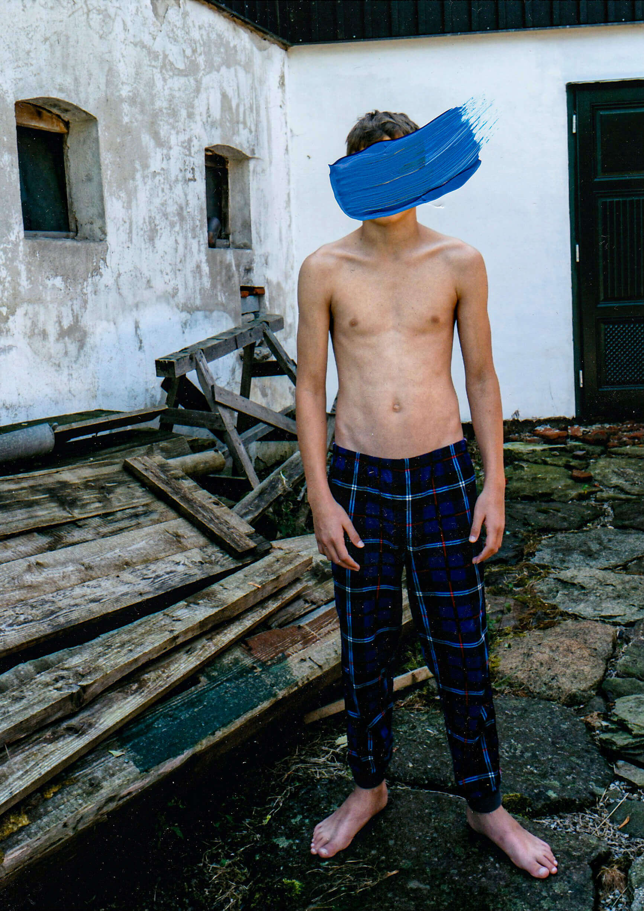
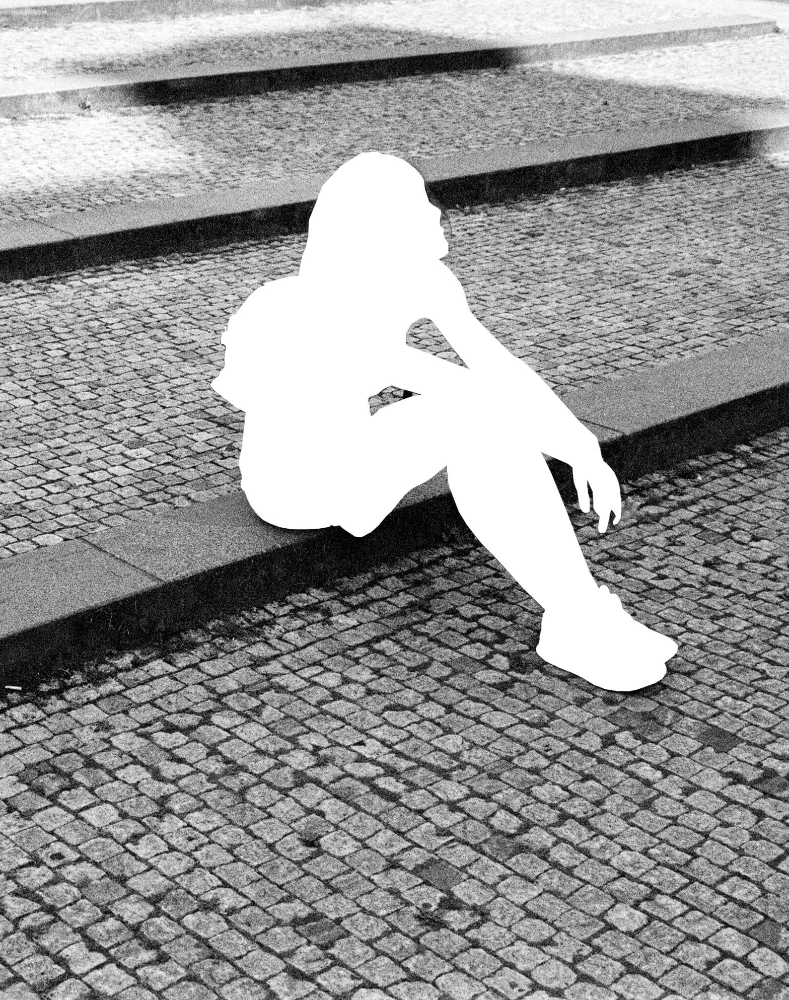
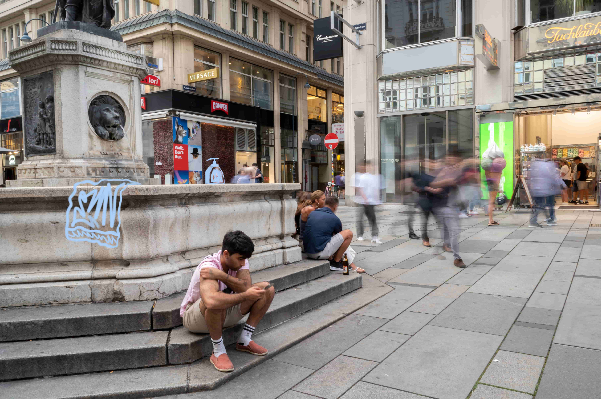
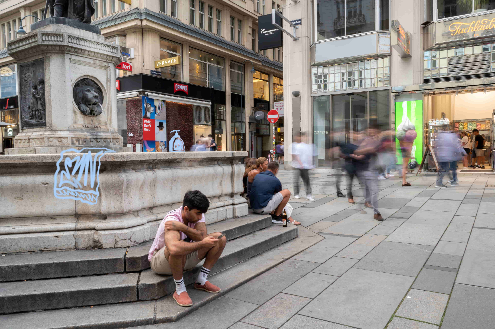
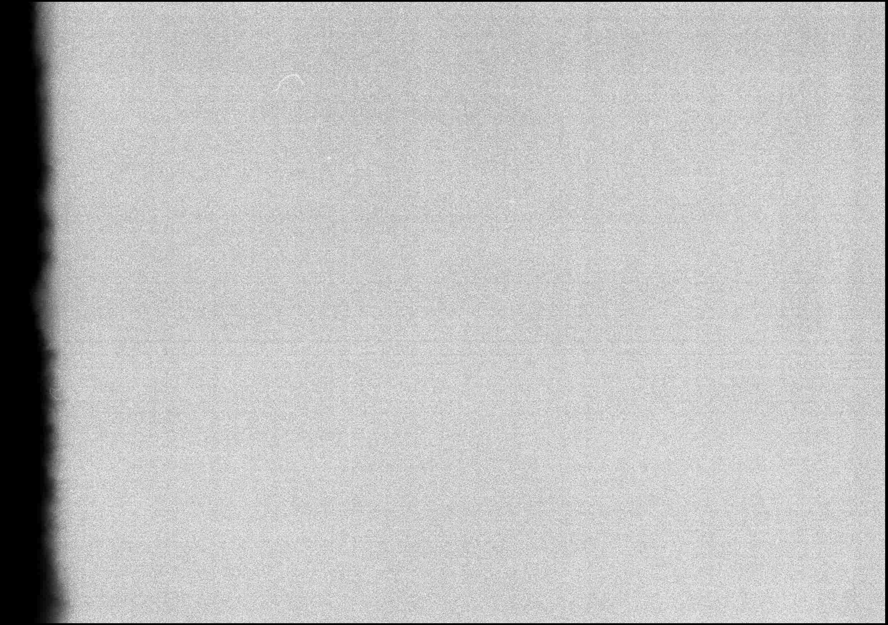
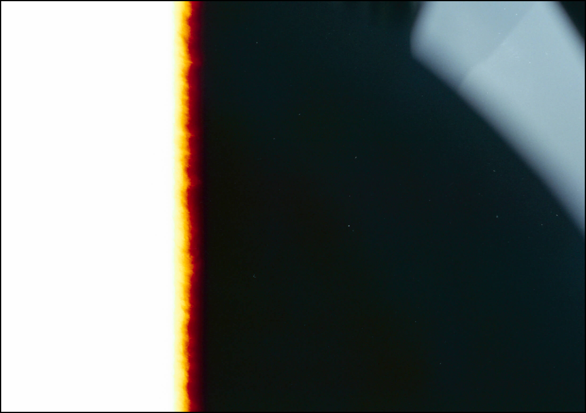
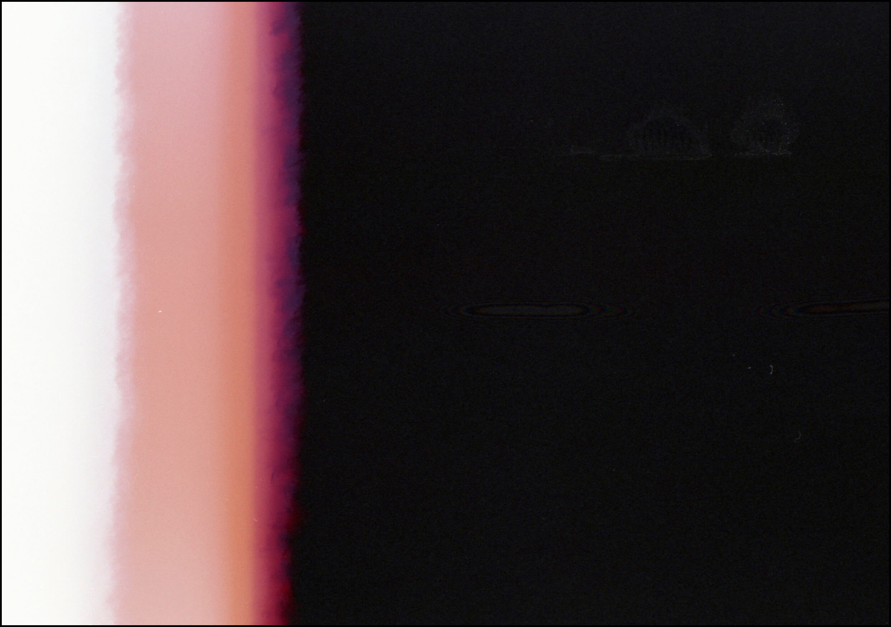
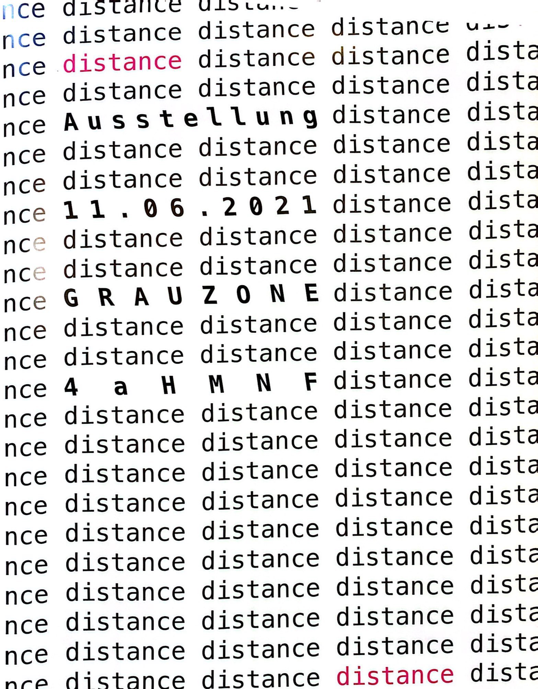

2023/09: DER VOM STARTRAUM - LINZER STR. 16 3100 ST. PÖLTEN - ZUR VERFÜGUNG GESTELLTE AUSSTELLUNGSRAUM WURDE ZU EINEM WOHNZIMMER MÖBLIERT, WELCHES EIN MULTIKULTURELLES ZUHAUSE DARSTELLTE. UNTERSTRICHEN WURDE DIESE IDEE DURCH DEN PROJEKTTITEL »ZWISCHENRAUM« (ZWISCHEN ZWEI HEIMATORTEN). DAS KONZEPT WAR, DEN AUSSTELLUNGSRAUM WIE EIN WOHNZIMMER EINZURICHTEN, UM EIN MULTIKULTURELLES ZUHAUSE ZU SCHAFFEN. DER RAUM HAT DIE DREI VERSCHIEDENEN NATIONALITÄTEN DER KÜNSTLERINNEN REPRÄSENTIEREN. NATALIE STEFANOWSKI IDENTIFIZIERT POLEN UND ÖSTERREICH ALS HEIMAT, WÄHREND VIOLA VICTORIA VOLDŘICH TSCHECHIEN UND ÖSTERREICH IHR ZUHAUSE NENNT. DAS AUFWACHSEN MIT VERSCHIEDENEN KULTUREN FÜHRT JEDOCH ZU VIELEN IDENTITÄTSFRAGEN, NICHT NUR IN EINEM SELBST, SONDERN AUCH UM EINEN HERUM. DIE AUSSTELLUNG IST EINE REAKTION AUF DIE IMMERWÄHRENDE IDENTITÄTSKRISE IN BEZUG AUF DIE HEIMAT, UND SOLL DIE VERWIRRUNG IN BEZUG AUF DIE NATIONALE ZUGEHÖRIGKEIT ANERKENNEN.
  

2020/11: DIES IST EIN PLATZHALTERTEXT, DER ZWISCHEN DEN BILDERN STEHT. HIER KANNST DU INFORMATIONEN ODER EINE BESCHREIBUNG EINFÜGEN, DIE SICH AUF DIE BILDER BEZIEHEN.
   